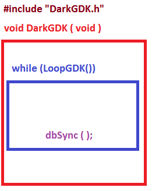
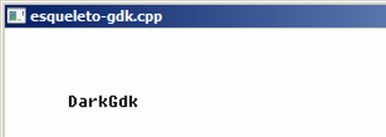

Curso completo de DarkGdk
Gameprog - Escola de programação de jogos digitais
Contato: gameprog.br@gmail.com
Fase 1
01. A estrutura básica do programa DarkGdk
1.1 Visão geral

O desenho acima ilustra o esqueleto mínimo de um programa com a biblioteca
DarkGdk:
---------------------------------------------------------------------------
1) Você precisa incluir o arquivo de cabeçalho #include "DarkGDK.h"
Esse arquivo permite o acesso completo a todos os recursos da
biblioteca: luz, cameras, objetos 3D, som, video etc.
---------------------------------------------------------------------------
2) O ponto de entrada do programa é a função void DarkGDK () { // prg }
Essa função equivale a função main() de c/c++ e equivale a função WinMain()
de um programa windows padrão. O que ocorre aqui é que a biblioteca DarkGdk
implementa sua própria função WinMain() provendo o seu programa dessa
obrigatoriedade. A função DarkGDK engloba o núcleo da sua aplicação.
---------------------------------------------------------------------------
3) Dentro da função DarkGDK() tem uma estrutura while() aonde deve ficar o
núcleo do seu jogo ou aplicação 3D:
while ( LoopGDK ( ) ) {
suaLogica() // atualização da sua lógica
dbSync ( ); // Atualizando a tela
} // fim do while principal
Dentro deste bloco você deve colocar a lógica de atualização do seu jogo
ou da sua aplicação 3D: atualização do posicionamento da personagem,
atualização dos inimigos, detecção de colisão, etc.
Esse bloco necessariamente deve terminar com dbSync() que joga os
gráficos que foram atualizados na memória em sua tela.
Vimos acima que a biblioteca DarkGdk implementa nos bastidores a função
obrigatória WinMain(), a biblioteca não só implementa essa função mas
também arca com muitos aspectos primários de um programa Windows tal
como processar as mensagens que sua janela recebe, mensagens como a
digitação da tecla ESC que termina a execução do seu programa. A função
LoopGDK() é que permite o motor DarkGdk tomar conta dessas atividades
primárias.
Veja abaixo nosso programa exemplo aonde mostramos a string 'DarkGdk' na
posição (50,50) da janela. Antes de mostrar a string pintamos o fundo da
janela de branco e colocamos o preto como a cor de frente do texto.

// Sempre que usar a Dark GDK você deve garantir a inclusão desse arquivo
#include "DarkGDK.h"
void initsys();
// Eis aqui o ponto de entrada da sua aplicação
void DarkGDK ( void ) {
initsys();
// Nosso looping principal
while ( LoopGDK ( ) ) {
dbText (50,50, "DarkGdk");
// Atualize a tela.
dbSync ( );
} // fim do while principal
// Retorne ao Sistema Windows
return;
} // fim da função: DarkGDK
// -------------- initsys(): Inicialização básica do sistema ------------
void initsys() {
int nBranco = 0xFFFFFF;
int nPreto = 0;
dbCLS(nBranco);
dbInk(nPreto, nBranco);
dbSetWindowTitle ("esqueleto-gdk.cpp");
// Configurando o video para a máxima performance a 60 fps
dbSyncOn ( );
dbSyncRate ( 60 );
} // fim da função: initsys()